I'm a digital marketing strategist working across tech, healthcare, fintech and home services. My work starts before the first post: understanding the business, the audience and the opportunity, then turning that into a system a team can execute every week.
My background in Mobile Computing helps me understand products the way developers do, and my work as an internationally published author shapes how I write: real people, real problems, no inflated claims.
أعمل كاستراتيجية تسويق رقمي مع علامات في التقنية والصحة والتقنية المالية وخدمات المنازل. يبدأ عملي قبل أول منشور: فهم العمل والجمهور والفرصة، ثم تحويلها إلى نظام ينفذه الفريق كل أسبوع.
خلفيتي في الحوسبة المتنقلة تساعدني على فهم المنتج كما يفهمه المطور، وتجربتي ككاتبة منشورة دوليًا تشكّل طريقتي في الكتابة: أشخاص حقيقيون، مشكلات حقيقية، وبلا ادعاءات مبالغ فيها.
Business, market, competitors.
العمل والسوق والمنافسون.
What the audience searches.
ما يبحث عنه الجمهور فعلًا.
Strategy, calendars, KPIs.
الاستراتيجية والتقويم والمؤشرات.
Scripts, briefs, copy.
سكريبتات وبريفات ونصوص.
Data, root causes, adjust.
البيانات والأسباب والتعديل.
A capable tech company with no marketing structure: no unified identity, no defined audience and no path from attention to sales.
شركة تقنية قوية بلا بنية تسويقية: لا هوية موحدة، ولا جمهور محدد، ولا مسار يحول الاهتمام إلى مبيعات.
Valuable educational content that never reached the parents who were actively searching for it.
محتوى توعوي قيّم لا يصل للأهالي الذين يبحثون عنه فعلًا.
| Dayاليوم | Formatالصيغة |
|---|---|
| Satالسبت | Motion graphicsموشن جرافيك |
| Sunالأحد | AI videoفيديو AI |
| Monالإثنين | Carouselكاروسيل |
| Tueالثلاثاء | Expert videoفيديو خبير |
| Friالجمعة | Posterبوستر |
Regular posting with almost no traction, and no one knew why.
نشر منتظم بلا نتائج تقريبًا، ولا أحد يعرف السبب.
| Problemالمشكلة | Decisionالقرار |
|---|---|
| Wrong geographyجمهور من خارج الدولة | Unified settingsتوحيد إعدادات النشر |
| 2-second drop-offمغادرة في ثانيتين | Open with movementافتتاح بحركة حقيقية |
| Scattered topicsتشتت المواضيع | One story per weekقصة واحدة أسبوعيًا |
| Mixed stylesأساليب متعددة | One templateقالب واحد ثابت |
A brand-new platform with no audience that needed to be known before launch day.
منصة جديدة كليًا بلا جمهور، تحتاج أن تُعرف قبل يوم الإطلاق.
Available for full-time, part-time and remote marketing roles.
متاحة لوظائف التسويق بدوام كامل أو جزئي أو عن بُعد.
Client names and identifying details are withheld to respect confidentiality. Samples are reconstructed to illustrate the method.
تم إخفاء أسماء العملاء وأي تفاصيل تعريفية حفاظًا على السرية، والنماذج معاد صياغتها لتوضيح المنهجية.
Fifteen detailed skill sheets — open any card for the full PDF. · خمس عشرة ورقة مهارة مفصلة، افتح أي بطاقة لقراءة الملف كاملًا.
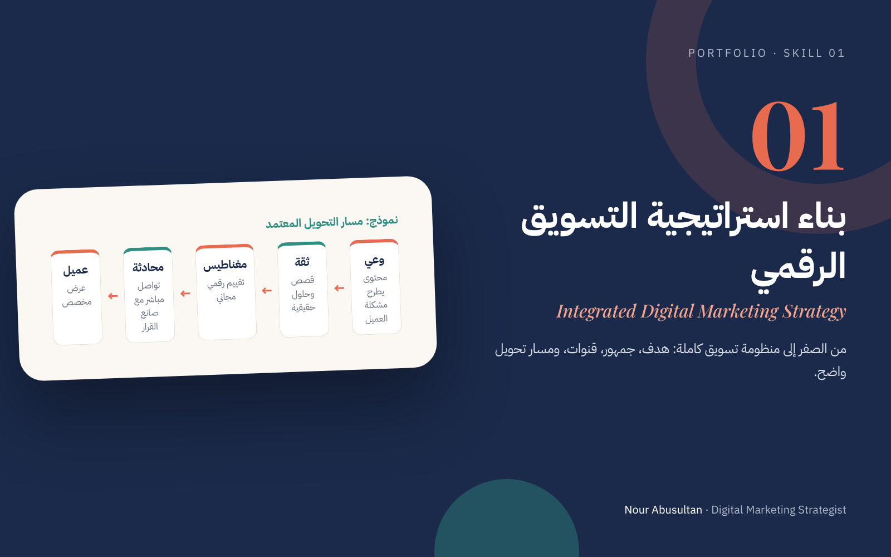
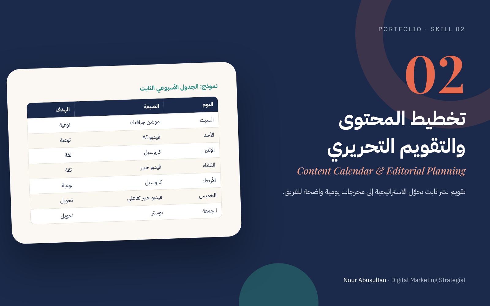
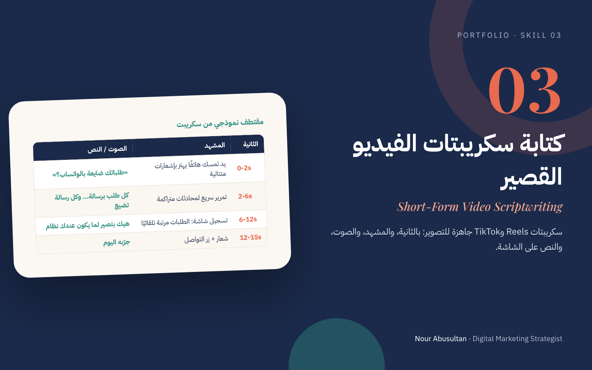
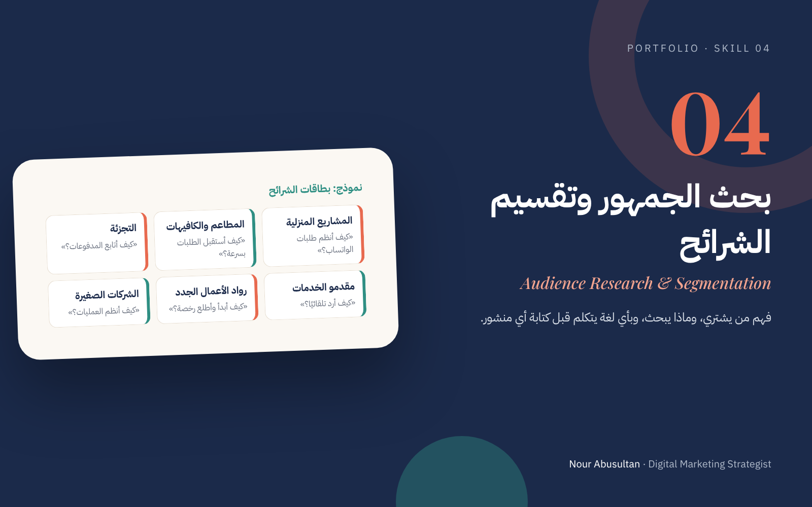
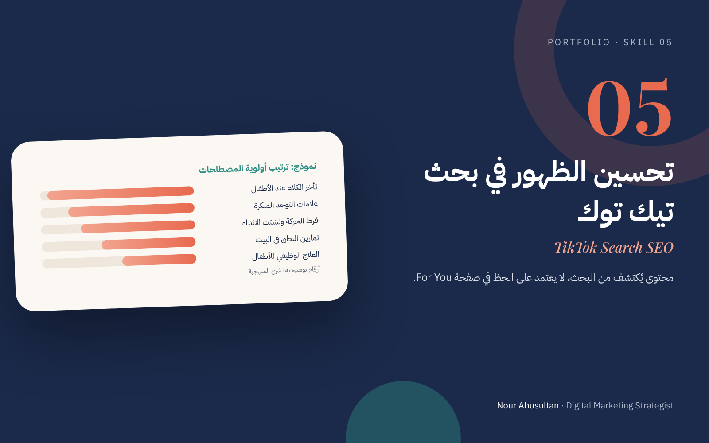
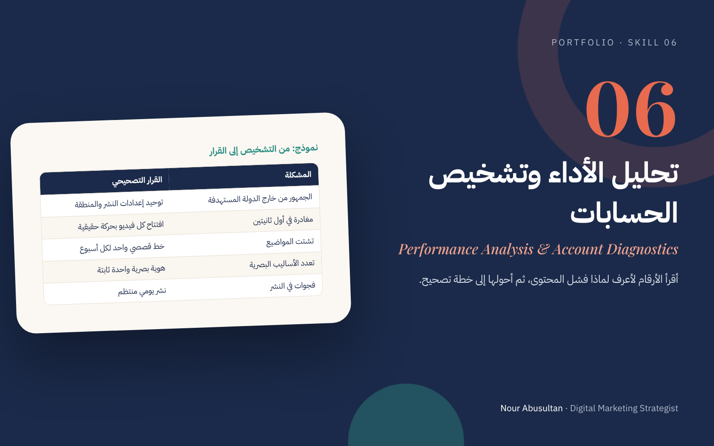
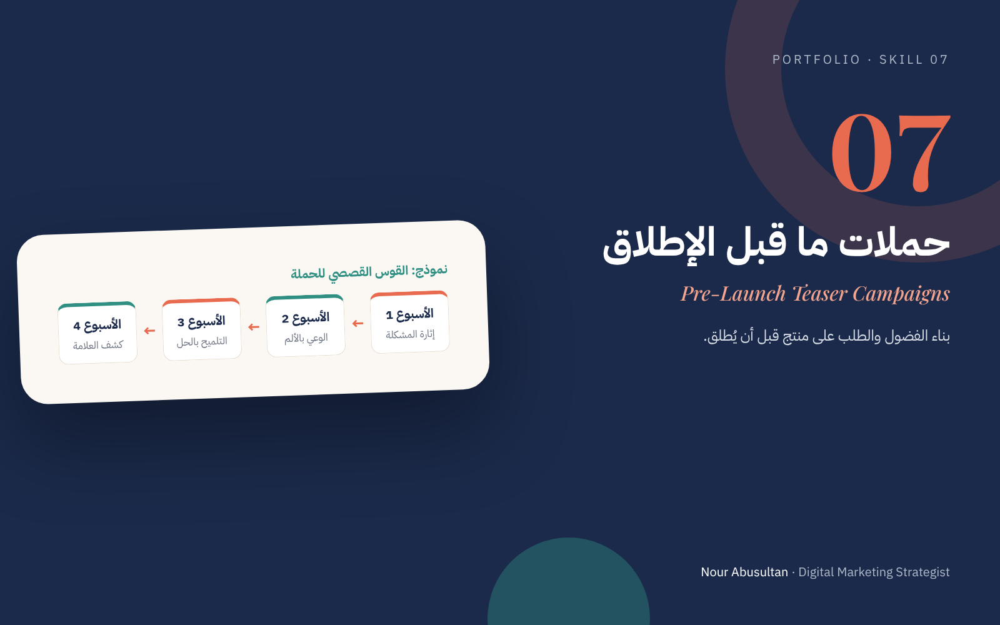
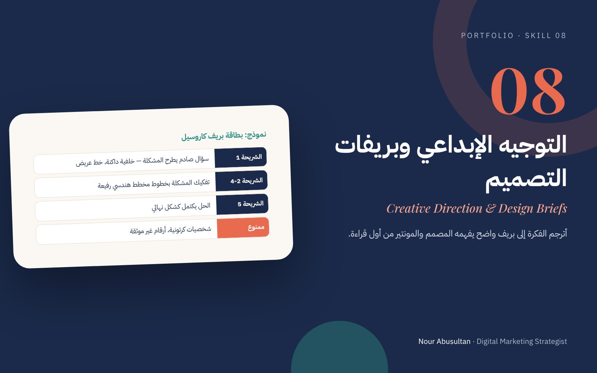
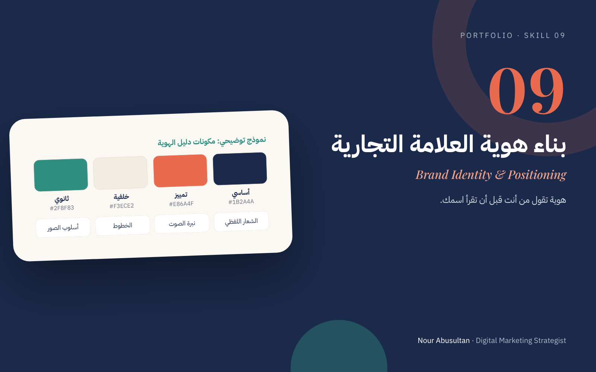
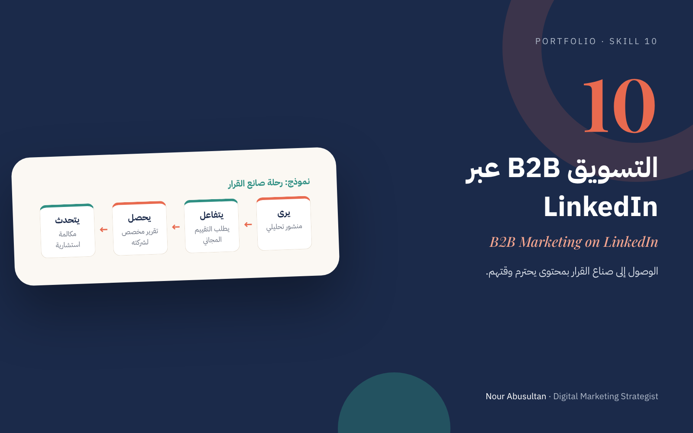
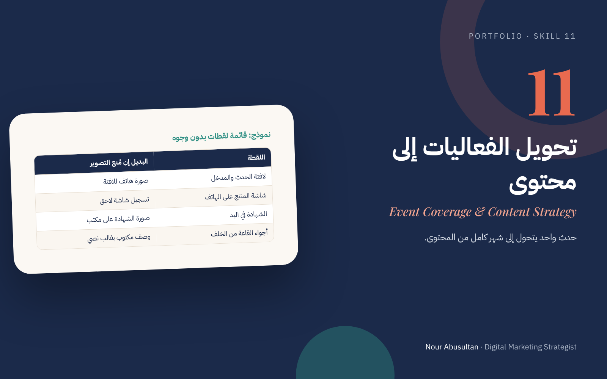
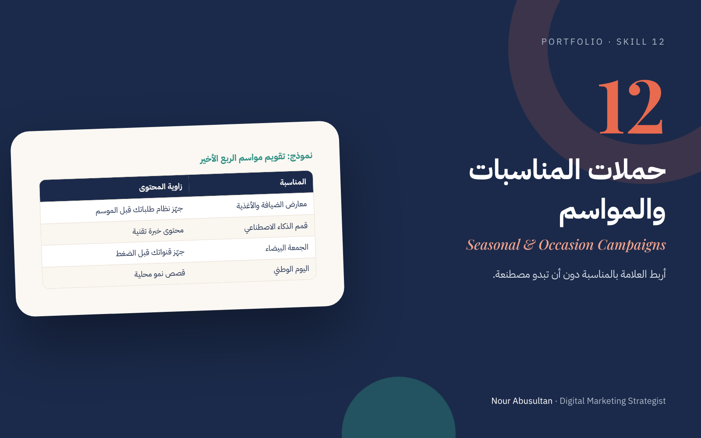
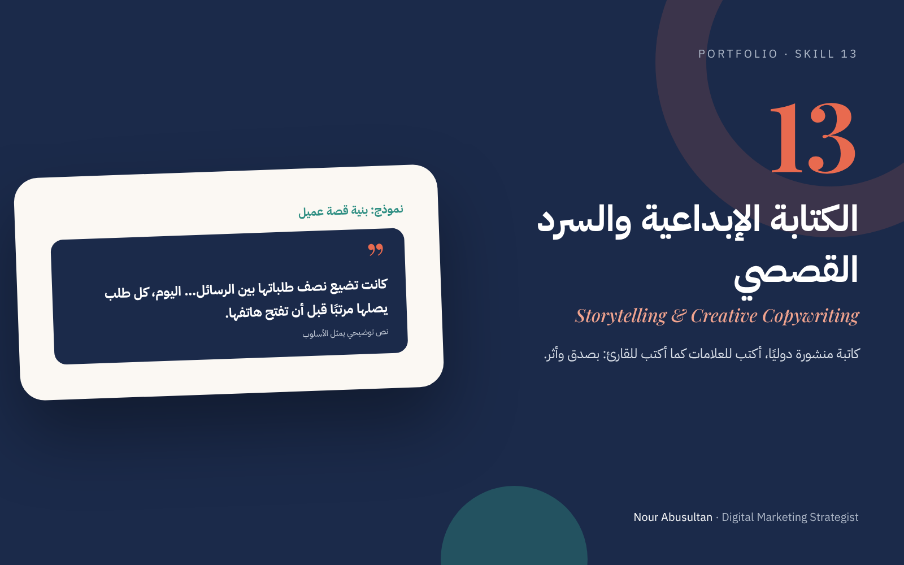
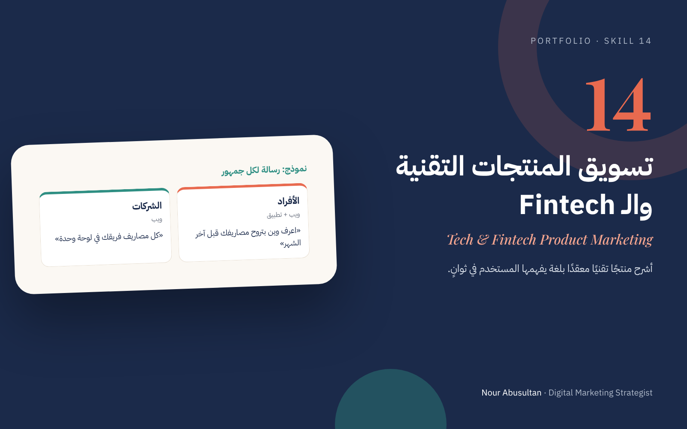
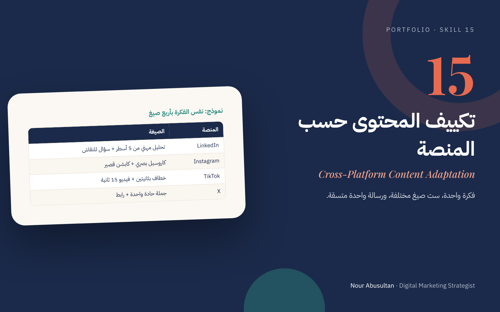